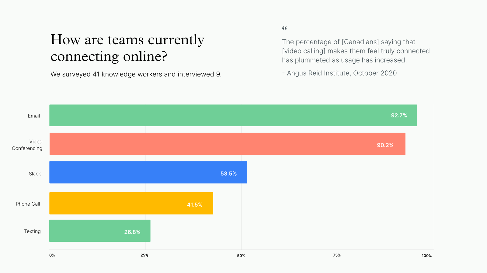

Wörkestra is a desktop and mobile app that allows remote coworkers to see and hear each other’s keyboard
and mouse clicks. Wörkestra is an exploration of how teams can be more present with each other over
distance while bringing joy into the remote workday.
This project was a thirteen-week directed study supervised under Carman Neustaedter,
taking a deep dive into the informal conversation habits of knowledge workers in North America.
Within the project, our team conducted a literature review and user interviews to ultimately build a
research report documenting COVID-19’s impact on project teams. This report informed our solution —
Workestra, a new interaction for remote teams with the aim to reduce social isolation throughout the workday.
Problem
Due to COVID-19, companies have moved team collaboration solely online,
causing 4.7 million Canadians to depend on online communication systems. According to the Angus
Reid Institute, “the percentage of [Canadians] saying that [video calling] makes them feel truly
connected has plummeted as usage has increased.” Authentic interactions such as spur-of-the-moment
conversations feel awkward and forced online, which is a missed opportunity for building team rapport.
“ I miss grabbing lunch with the team. All we talk about is work now.”

These seemingly small, but meaningful in-person interactions such as stopping by a co-worker’s
desk to catch up, are examples of how these conversations can foster social support, collaboration,
and satisfaction within the workplace. From our findings, 95% of survey respondents said it was
difficult to socialize with their co-workers in a remote setting. Fostering authentic social
relationships online is important in the workplace, for the sake of mental health and a
productive team environment.
For a full breakdown of our findings, check out the full research report here.
Wörkestra is a desktop and mobile app that allows remote coworkers to see and
hear each other’s keyboard and mouse clicks. Wörkestra is an exploration of how
teams can be more present with each other over distance while bringing joy into
the remote workday.
Turn your sound on for the video!
When to use Workestra
There are many ways to use Workestra, whether it be for team morale.
For a more in-depth explanation of Workestra, check out our final slidedeck,
which contains more features, our process, and overall guiding principles that
we used to design for ____.
Click + Drag any of your coworker’s icons back and forth to distort their sound.
Think of it as a tap on the shoulder or a friendly way to say hello during the workday.
The wiggled team member will receive a notification and can follow up through their
company communication platform..
2. Send Emojis with Keywords
Type keywords and phrases like “breaktime” or “coffee” in any application to give
your team a hint about what you’re doing and where you are in your workday. Unique
keywords can be programmed by individual team members and can be used to send subtle
messages to their team.
3. Keep Workestra on the Side
With Workestra Mini, team members can see their co-workers in their peripheral vision.
Curious team members can hover over the musical bars to reveal a profile picture of
the currently active team member.
4. Sync up with Co-Workers
Remote work can be lonely. Workestra shows when you and your coworkers are both
typing above 90 words per minute — in other words: “in the zone” — by making
your instruments sound more resonant.